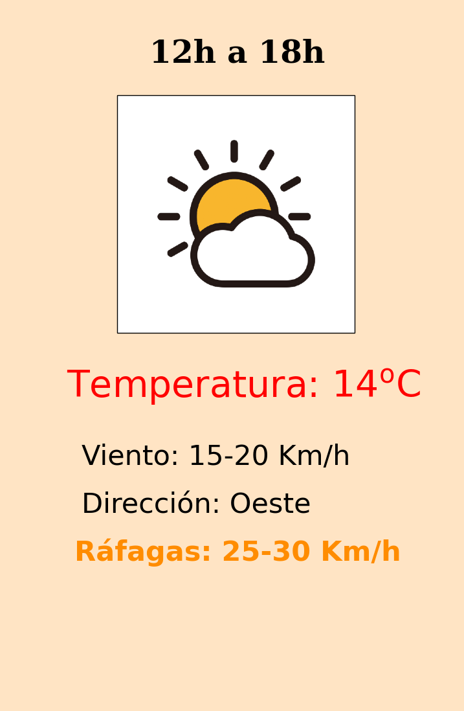
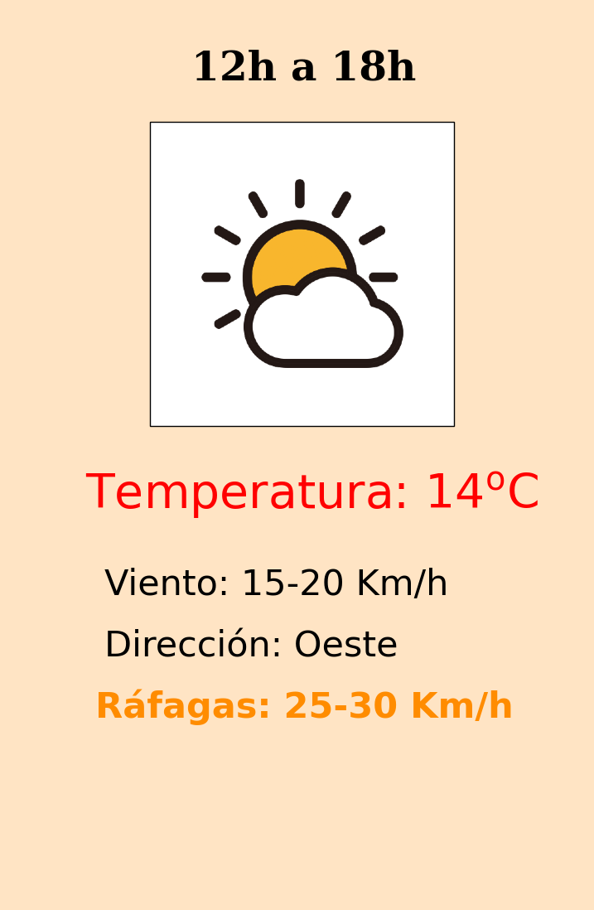

Para ver el detalle diario, haga clic en el panel


Excepto en el caso de lluvia/nieve, los íconos meteorológicos son del paquete "Weather Color" de Sihan Liu (https://www.sihanliu.com/). En el caso del icono lluvia/nieve, el mismo ha sido realizado a partir de dos íconos de ese mismo trabajo.